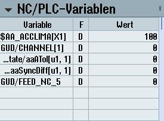

Das Widget "NC/PLC-Variablen" dient der Anzeige der NC- und PLC-Variablen.
Für jede Variable werden der Variablenname, der Datentyp und der Wert angezeigt.
Es werden nur die Variablen angezeigt, die aktuell im Bild "NC/PLC-Variablen" im Bedienbereich "Diagnose" dargestellt werden. Um die Liste im Widget "NC/PLC-Variablen" nach einer Änderung im Bild "NC/PLC-Variablen" im Bedienbereich "Diagnose" zu aktualisieren, müssen Sie das Widget zuklappen und wieder aufklappen.
Sie haben die Möglichkeit vertikal zu scrollen.